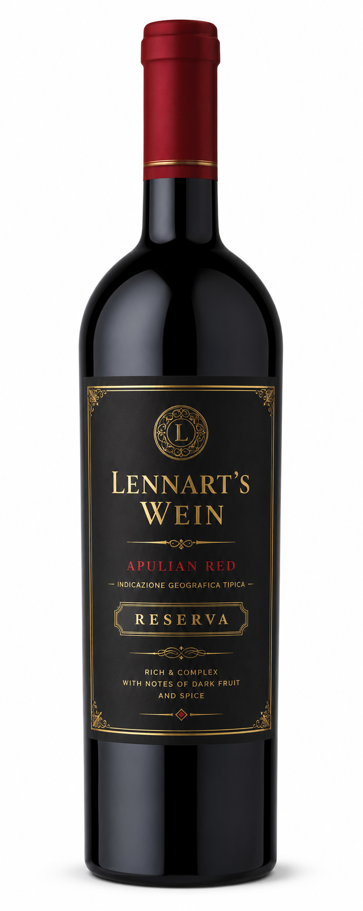
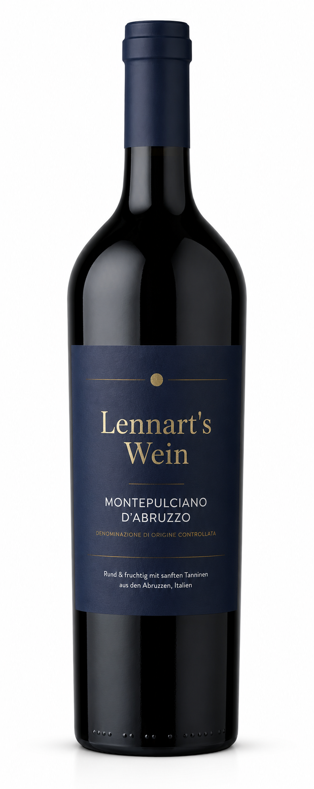
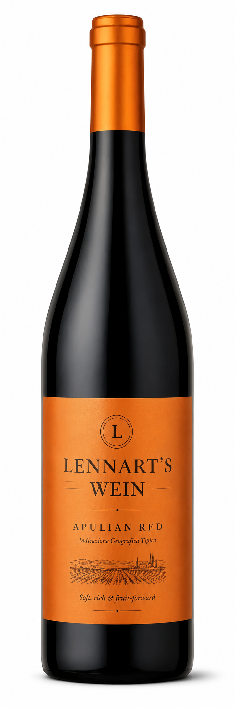
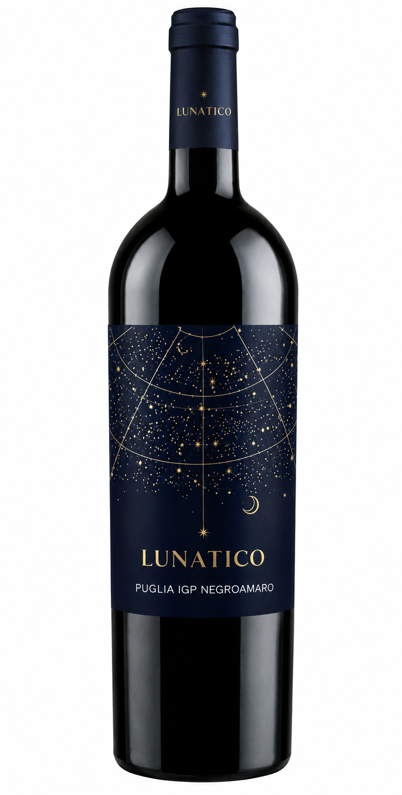
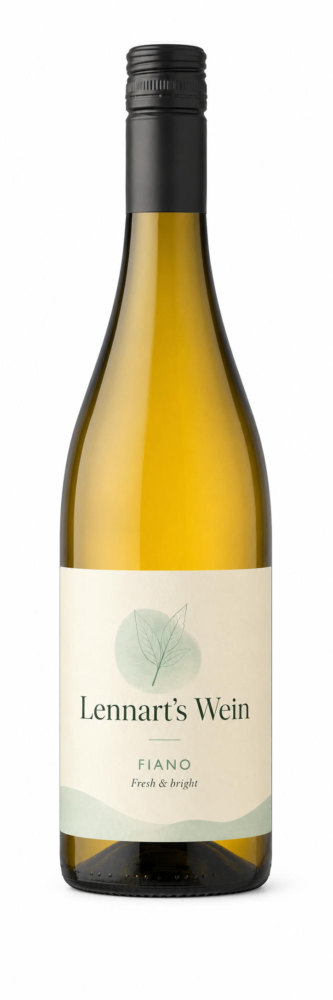
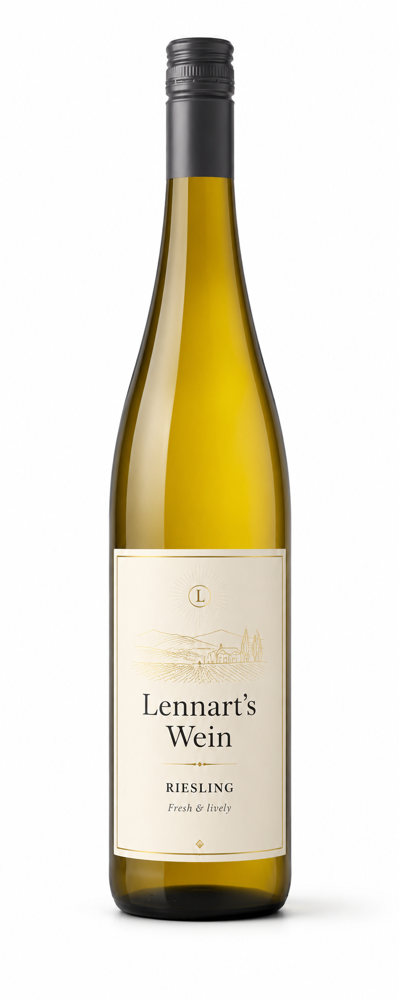
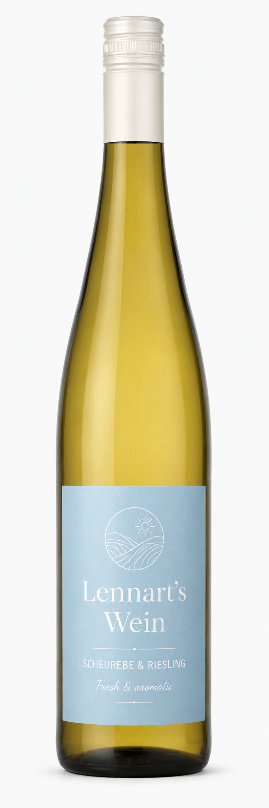
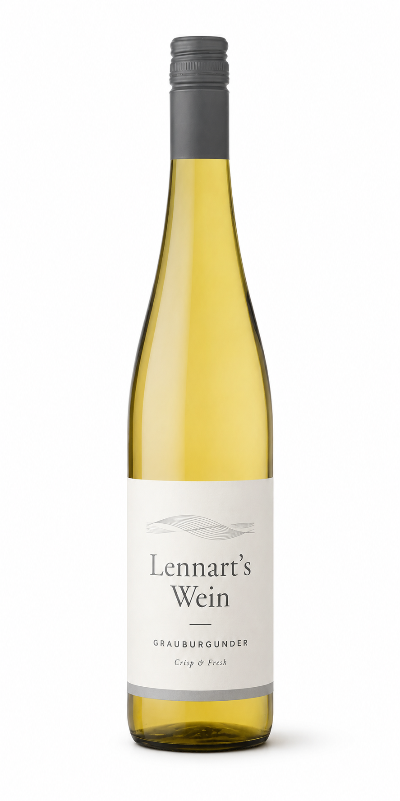

A small, personal selection of wines I genuinely like and keep coming back to — easy, balanced and made for relaxed evenings.
No wines in this selection yet.

The Riserva version of the hugely popular Doppio Passo Primitivo. Only the best Primitivo grapes from southern Italy are used, harvested in two passes so the later grapes can concentrate their aromas.
The Riserva ages for an extra 12 months in oak barrels — a soft, intense bouquet of ripe plums with gentle coconut and vanilla, fine wood spice and a long, deep finish.
My opinion: Exactly my kind of red — soft, warm and full, with that sweet, intense Primitivo character. A great step up for anyone who already loves the classic Doppio Passo.
Pairs well with: grilled meat, pasta with rich sauces, hard cheese or dark chocolate.
View wine
A reliably good and very popular Italian red. A cold maceration draws plenty of colour and aroma from the skins, while fermentation in stainless steel keeps it fresh, harmonious and soft in tannin.
Deep ruby red with garnet reflections, forest berries and a gentle spice on the nose. Full and round on the palate, but never heavy, with a long finish.
My opinion: An easy, everyday red that simply works. Great value and a perfect midweek bottle.
Pairs well with: pizza, pasta or a creamy risotto.
View wine
A fruit-forward blend from Apulia in deep ruby red. Aromas of dark berries, raspberry and strawberry are lifted by soft notes of vanilla for a complex, inviting bouquet.
Full-bodied and harmonious, the fruit-driven character and a fine touch of residual sweetness make this a real crowd-pleaser. The Luna Argenta winery is known for its biodynamic farming.
My opinion: Soft, fruity and a little sweet — an approachable red that is very easy to enjoy.
Pairs well with: lasagne, grilled rib of beef or slightly bitter chocolate.
View wine
A fine example of the Negroamaro grape from the sun-blessed vineyards of southern Italy. Ruby red with violet accents and a rich, layered nose of spice and dark fruit.
Black berries, cassis and blackberry lead the fruit. Medium-bodied and soft in texture, with a nice balance of freshness and warmth and a long, savoury finish.
My opinion: Smooth, balanced and very drinkable — a great little red for the price.
Pairs well with: pasta, grilled vegetables, pizza or mild cheese.
View wine
An organic Sicilian white made from Fiano, a grape with real history — enjoyed already in the 13th century, nearly lost in the 1970s and now back in style. The profile sits close to Viognier: floral and fresh.
Straw-yellow with green reflections. Floral on the nose, with citrus, nougat and grenadine carried by a subtle, fresh acidity through a long finish.
My opinion: Bright, floral and great value. An easy, food-friendly Sicilian white that feels a little more interesting than its price suggests.
Pairs well with: spicy Asian dishes, a classic pizza Margherita, seafood or Mediterranean food.
View wine
An uncomplicated Riesling for easy moments — a relaxed evening with friends, alongside food or simply on its own. Fresh and fruity, with a fine balance between sweetness and acidity.
Floral notes with peach and apricot jump out of the glass. Eight months on the fine lees make it soft and layered without ever feeling heavy.
My opinion: Uncomplicated but far from boring — a friendly everyday Riesling that fits almost any occasion.
Pairs well with: light snacks, salads or simply on its own.
View wine
A cuvée of three aromatic grapes — Bacchus, Scheurebe and Riesling — from winemaker Uli Metzger. The entry tier of the estate, but lively, tasty and fun.
An intense tropical nose of grapefruit and pineapple, cut cleanly into the flavour with crisp, fresh acidity and a fine touch of residual sweetness to balance it out.
My opinion: Tropical, juicy and playful — an aromatic crowd-pleaser that is hard not to like.
Pairs well with: apéritif, lightly spicy food, fresh starters or fruity salads.
View wine
The dry Pinot Gris from Rheinhessen that started the III Freunde project by Joko Winterscheidt and Matthias Schweighöfer. It stands for easy, unfussy enjoyment that brings friends together.
Pale gold in the glass, with a juicy nose of green apple, pear and peach. A touch of citrus joins on the palate, carried by a gentle creaminess and fine acidity, with excellent drinkability.
My opinion: Friendly, juicy and very easy to enjoy — a proper crowd-pleaser for a picnic or a get-together.
Pairs well with: poultry, fish, quiche, pasta, pizza or a summer BBQ.
View wineSome links on this page are affiliate links. If you buy through them, I may earn a small commission at no extra cost to you.